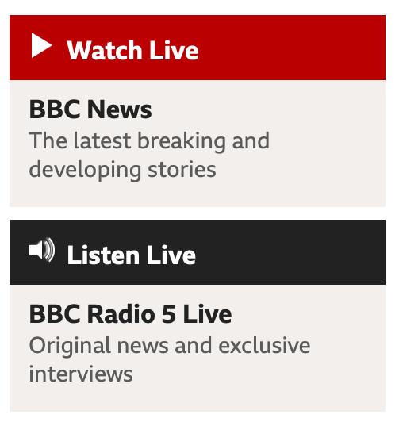

I want to create a website about the impact of Fake News and its real-life consequences. Essentially, I envision a website organized into sections, like the format of the 7 Deadly Sins website we discussed in Week 3. I want my website to consist of extensive information with regards to the most notorious fake news stories out there, as well as tips on how to spot fake news.
The Website I analysed was: BBC News
BBC News offers various audio elements to enrich the user experience and their website primarily utilises audio for speech purposes like news reports, interviews and documentaries. This allows them to deliver news in a captivating manner as listeners can hear directly from a first-hand account. Ambient sounds and sound effects aren’t that popular on the website. However, they use audio and video together when reporting on news e.g. the Palestine conflict, to portray the country’s situation. The benefits of incorporating audio in these ways are manifold: it helps convey nuances of tone and emotion, provides context through sounds and allows visually impaired people to access news. However, it's important to consider caveats such as ensuring that the audio doesn't distract from the content or conflict with the user’s environment e.g. background noise making it difficult to hear a news report.

I decided to edit the Applause audio as it had the potential to end earlier as there was a few seconds of silence where the audio was still running.
MP3 derivative in Medium (145-185 kbps) quality, Joint Stereo
This audio file sounded slightly muffled yet intense at the same time which would be cause by the joint stereo aspect, through combining elements of the left and right channels. This audio was cropped but the results won't really be noticeable as the unedited version had a longer playing time, but it was just silence at the end.
MP3 derivative in Standard (170-210 kbps) quality, Stereo
This audio file was the best of the three, it has a balance of file size and audio quality, it delivers decent sound quality and detail. It also has a wider sound coverage than the others. This audio was cropped but the results won't really be noticeable as the unedited version had a longer playing time, but it was just silence at the end.
MP3 derivative in Medium (145-185 kbps) quality, Forced export to mono
The audio remained clear but it sounded less intense, it sounded quieter in a way. This audio was cropped but the results won't really be noticeable as the unedited version had a longer playing time, but it was just silence at the end. It would be fair to say that this audio result was of lower quality than the previous ones.